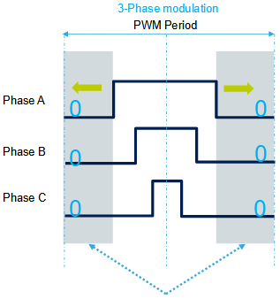
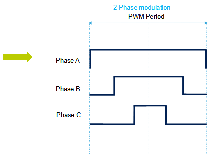
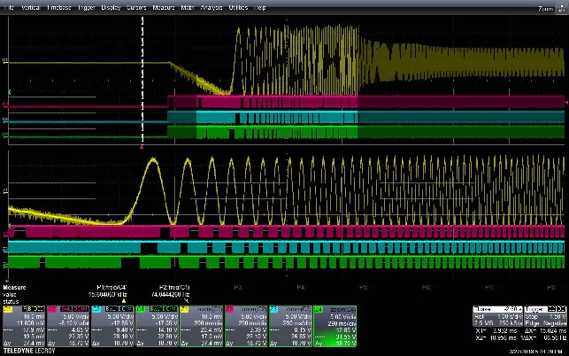

|
STM32 Motor Control SDK MCFW-6.1.0
Software Development Kit to build applications driving PMSM Motors with STM32
|
Loading...
Searching...
No Matches
|
STM32 Motor Control SDK MCFW-6.1.0
Software Development Kit to build applications driving PMSM Motors with STM32
|
DPWM feature allows the users to reduce the switching losses with an additional modulation technique according to their application.
This new approach is added to the current default 3-phase modulation.
It is deployed in all supported configurations:
DPWM mode is available to the overall MCU families supported by STM32 MC SDK.
The target markets are that of Home appliances and High voltage applications:
By suppressing the (0, 0, 0) state, two switches per cycle can be removed (here named with low side – usually high side):
 
$Duty_A$ is enlarged of $PWM\_period – Duty_A$ to cover the whole PWM period.
In this case, as (1, 1, 1) state is enlarged of $Duty_A$:
To enable the DPWM mode, check the "Discontinuous PWM" parameter box in PWM Generation page of the FOC Wizard of the Workbench as shown in the figure below.
When a project is generated with the DPWM, the activation of 2-phase modulation is effective at the startup stage, just after the calibration.
DPWM is enabled all-time in the 3-Shunt case, while it is not true in 1-Shunt.
In the 1-Shunt case, since the A and B stages are used for current sensing in boundary 2 or boundary 2, it is not possible in this specific situation to work in 2-phase SVPWM. The workaround consists to automatically switch in 3-phase SVPWM during these transition stages.
Dynamically moving from 3-phase modulation to 2-phase modulation:
Legend:
Here is a snapshot capture of the startup phase in DPWM mode. 